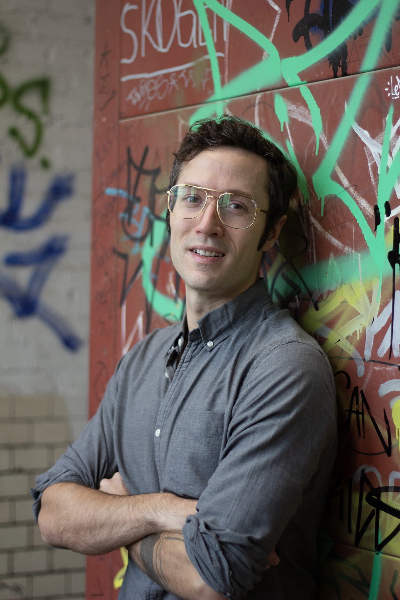

PhD, arts journalism, marketing. My career has moved deliberately between depth and reach, and now I help others do the same.

I work with NGOs, scale-ups, and artists and arts organisations on things that are too complex for conventional comms or marketing. The job is two-fold: helping clients get clear about what they do, and making that clarity resonate with the audiences that matter most — funders, partners, and the public itself.
The combination has defined a career that’s moved deliberately between depth and reach. Originally from Toronto, I showed range and interest in the broadest array of fields, and finished a double bachelor’s in arts and science: physics alongside Eastern religions, calculus alongside Kafka. Writing held it together: specifically, writing about complex works of art and talking to the people who made them. I started as a freelance art journalist in Toronto and still write criticism today.
I went to Cornell for a PhD in German Literature, studying a culture at its highest level. But teaching and public engagement remained the point. I taught writing seminars to undergraduates and designed an award-winning course on the social significance of team sports, bringing high culture into everyday life without condescending to either.
After Cornell, I spent six years in marketing and sales in the wine industry, learning to read audiences in real time and adjust to their language — from rural Pennsylvanians to Michelin-starred sommeliers in New York to restaurateurs in Berlin. It was daily contact with people who weren’t going to meet me halfway.
This consultancy is what that combination is for. Whether it’s the European Climate Foundation, AI tech and social enterprise startups, or international artists and Berlin art galleries, what my clients get is something most strategic communications can’t offer: the analytic depth to help them understand their work more fully, paired with the marketing instinct of someone who has spent years selling difficult things to sceptical audiences.
Correspondence
Tell me more about your work.
Book a free thirty-minute consultation.
Get in touchmatteo@clarityforcomplexwork.com
Connect on Linkedin